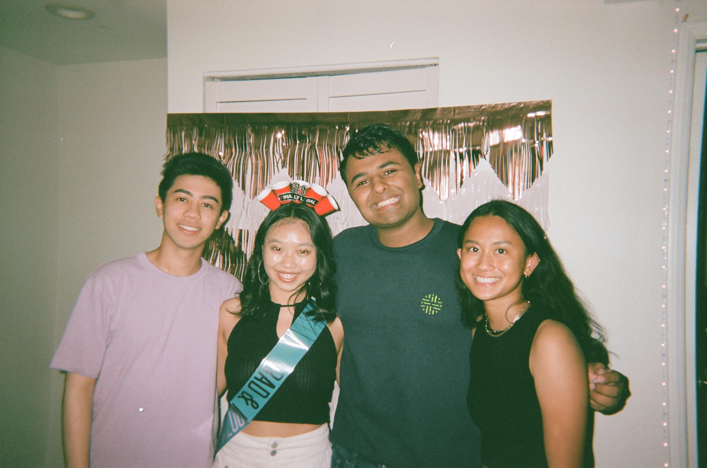
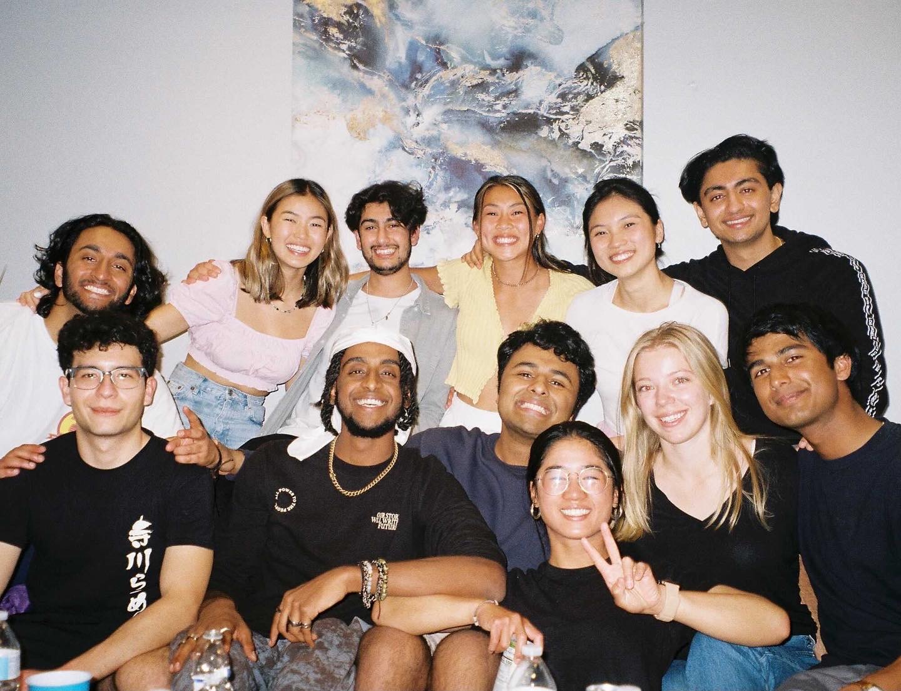
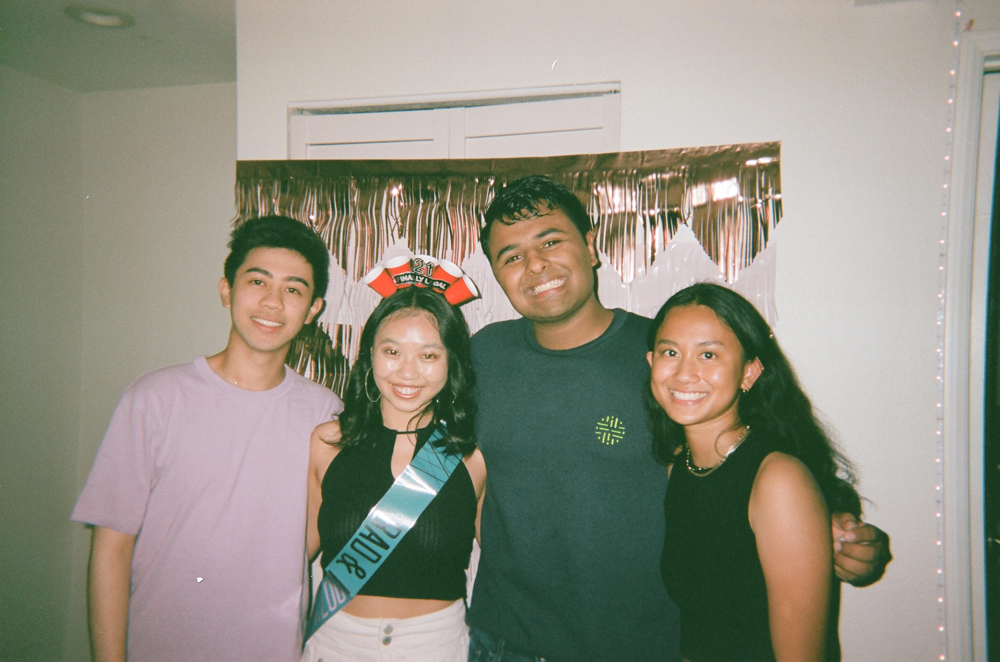
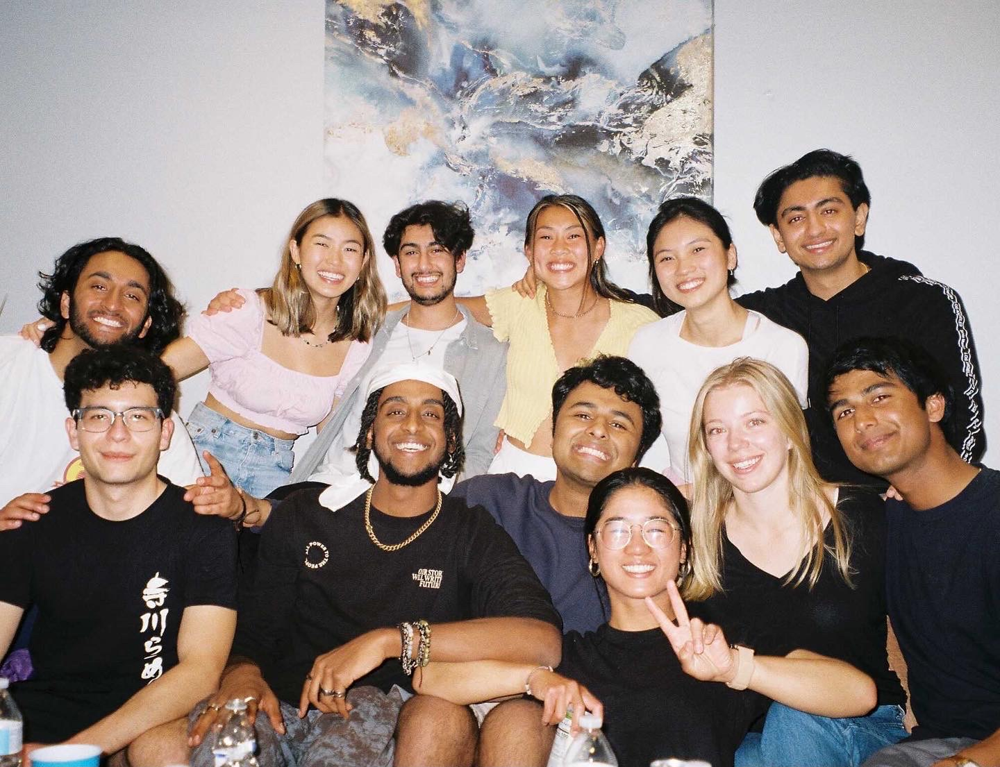
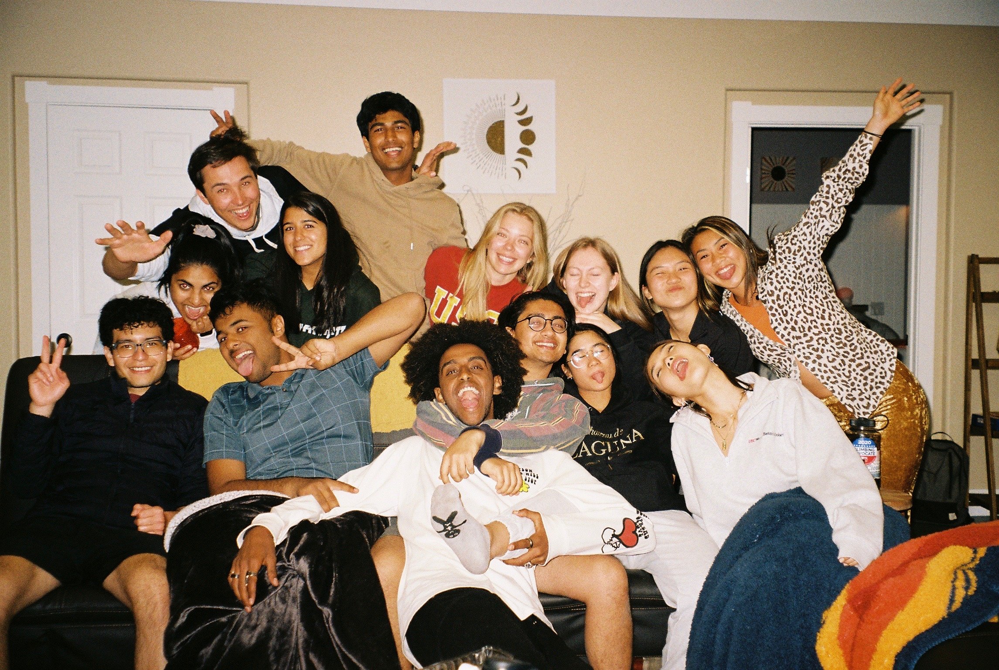
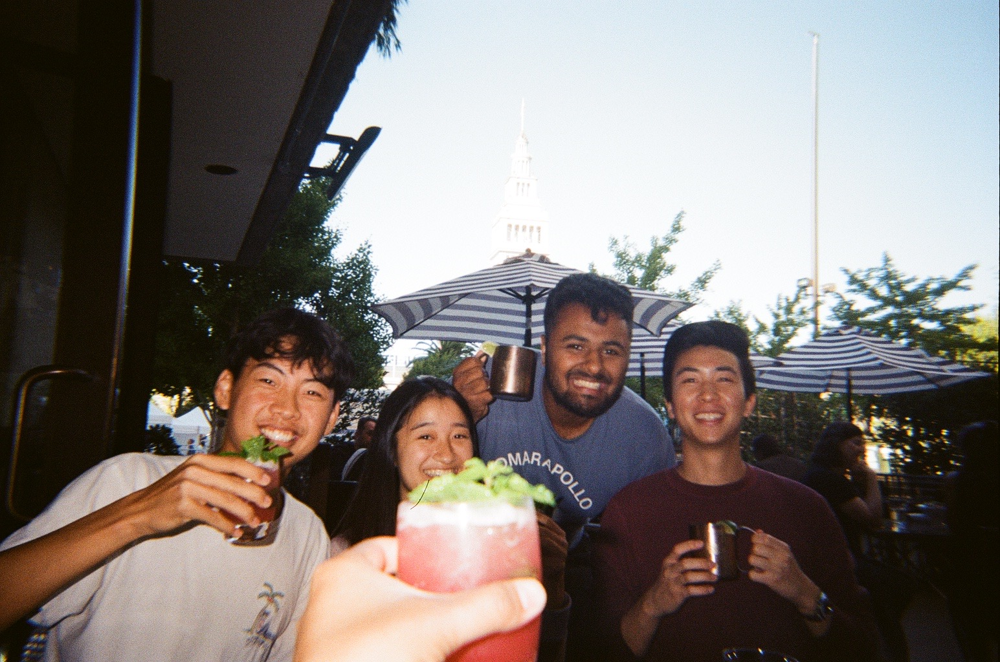
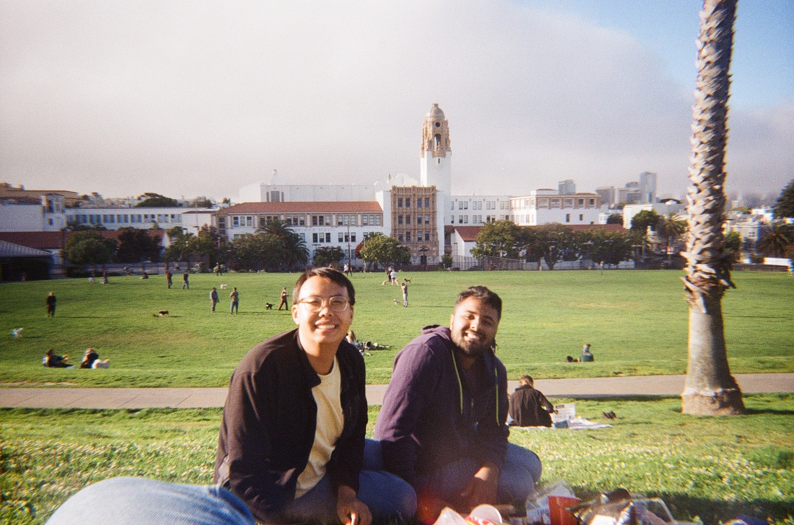
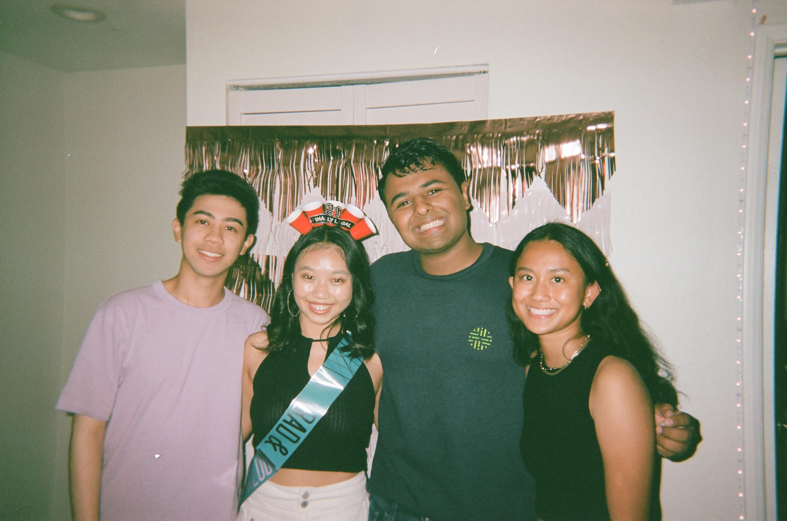
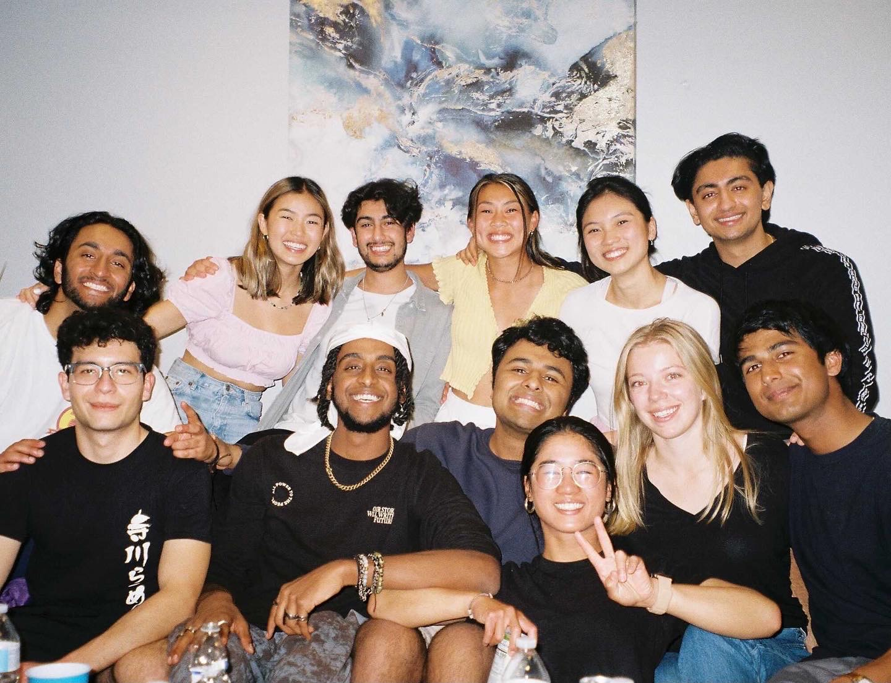

Hello! I'm Amartya. Welcome to my movie.





I'm a lifelong learner and passionate problem solver. From mathematical proofs to social issues to the New York Times Spelling Bee, I love applying my knowledge to challening and impactful work. I graduated from USC with my bachelor's degree in Applied Mathematics and Economics and have joined Amazon Web Services full time as a software engineer. One day, I hope to build products that better lives everywhere. When I'm not tackling computational problems, I can be found reading a philosophy book, chowing down on spicy food, or playing chess.
I'm building my toolbelt every day. Through my computer science minor, I was able to learn the fundamentals of object-oriented programming, data structures, and algorithms in C++. Since then, I've taken on several projects using HTML, CSS, JavaScript, and Python. Given my mathematical background, I have special interest in machine learning and data science, but I also love building full-stack websites and mobile applications that help consumer needs. Don't hesitate to reach out to share opportunities, project ideas, or general good vibes!